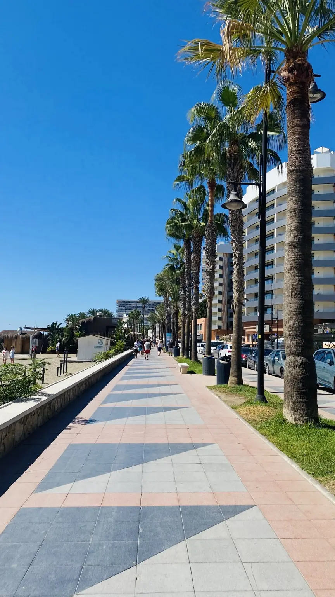

Geschichten
Eine Stadt lässt sich nicht mit einem einzigen Foto entdecken. Originalgeschichten, Hintergründe, Erinnerungen und mediterrane Lebensweisen.

Weihnachten und Neujahr in Torremolinos und Málaga
Calle Larios, die Kathedrale, der Jardín de Oz und der bislang bekannte Kalender – mit klarer Trennung bestätigter Ankündigungen und noch offener Traditionen
Dossier auf Spanisch lesen ↗
Torremolinos, viel mehr als Sonne und Strand
Jenseits der Postkarte: Geschichte, Meer, Stadtviertel und die Stadt außerhalb des Sommers
Geschichte lesen ↗
La Nogalera, wo die Nacht Geschichte hat
Was hinter einem der bekanntesten LGBTQ+-Ausgehviertel am Mittelmeer steckt
Geschichte lesen ↗
Pasaje Begoña, Erinnerung an Freiheit
Die dokumentierte Geschichte eines Ortes des Zusammenlebens und der Repression vom 24. Juni 1971
Auf Spanisch lesen ↗
San Miguel: das Fest, das Torremolinos auf die Straßen bringt
Wallfahrt, Volksfest und Prozession: das Fest im September anhand offizieller Quellen
Auf Spanisch lesen ↗
Welcome to the Paradise: eine Stadt zum Anhören
Ein Musikartikel mit Hörprobe von Next Stop: Torremolinos und vollständigen Fassungen in sechs Sprachen
Lesen und anhören ↗Geprüfte Informationen, sichtbare Quellen und offene Korrekturen. Wir erfinden keine Interviews, Lokale oder Veranstaltungen; gesponserte Inhalte werden gekennzeichnet. Originalartikel erscheinen zunächst auf Spanisch. Vollständige Übersetzungen folgen nach sprachlicher Prüfung.